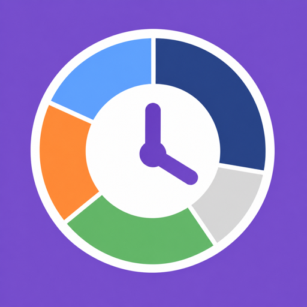

じかん帳
1日のタイムスケジュールを見える化
iPhone 広告なし 無料で使える
予定を立てると、予定どおりに過ごした時間は、そのまま記録になる時間帳アプリです。1日の予定を立てて、違ったときだけ直す。それだけで、自分が何に時間を使っているかが見えてきます。
できること
- 予定を立てるだけで記録に：行動を選んで時間を合わせるだけ。予定の時間が過ぎると、そのまま記録になります
- 1日が24時間のリングで見える：いつ・何をしたか、何も入っていない自由時間がひと目で分かります。下には行動ごとの合計時間が並びます
- 予定と違ったら、その場で変える：リングの「変える」から、今の時刻から別の行動に変えられます。過ぎた時間も、あとから記録できます
- ひとこと日記：その日がどんな日だったかを、スタンプで残せます（ひとことを添えるのは PRO）
- 振り返り：睡眠や勉強など、見たい行動の1週間の合計・1日平均・先週との違いが分かります。そのまま来週の予定も立てられます
- 睡眠の自動記録：許可すると、ヘルスケアの睡眠を自動で記録します。睡眠は、起きた日に一晩まるごと数えます
- 時間の上限・目標：「スマホは1日2時間まで」「勉強は週10時間」のように決められます
じかん帳 PRO
もっと便利に使いたい人のための有料版です。月額・年額は14日間無料で試せます。
- 曜日ごとのルーティンが、自動で予定に入る（今日から7日先まで）
- ひとこと日記のひとこと：スタンプに、100文字までのひとことを添えられます
- 月の振り返り：1か月の行動ごとの合計と、先月との差が分かります
- 過去の記録を期間の制限なく見られる・記録にメモ・テーマ（かわいい・クール）・上限と目標をすべての行動に・行動を30個まで
月額480円・年額3,600円（どちらも14日間無料）・買い切り7,800円。価格は App Store の表示に従います。
記録は端末の中だけに
予定・記録・日記は、お使いの iPhone の中にだけ保存され、外部には送信されません。広告は表示しません。
App Store で近日公開予定です。